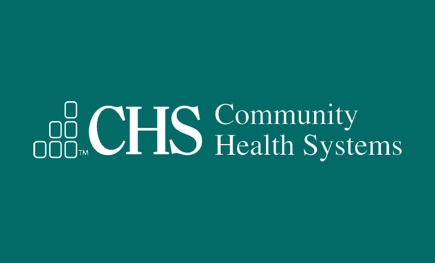

Work History
Affiliate Broker/Realtor
Company Name: Keller Williams Realty, Inc.
Dates Employed: Aug 2016 – Present
Employment Duration: 2 yrs 9 mos
Location: United States
- Responsible for creating, implementing, and managing marketing & database systems to facilitate the sale of real property.
- Cultivate and manage strategic partnerships with business vendors to execute and remediate financial, inspection, contract, marketing, and design systems and processes.
- Create and utilize innovative systems to conduct comparative market analyses for the scope of property improvement and market readiness.
Work History Continued

Community Health Systems
Total Duration: 3 yrs 3 mos
Title: Application Systems Analyst
Dates Employed: Oct 2015 – Aug 2017
Employment Duration: 1 yr 11 mos
- Create and manage interdepartmental project initiatives to add value and reduce variation
- Assist in the management of Athena and AllScripts EHR software applications to support clinical operation
- Administer and facilitate the intake process for new interface projects
- Serve as an Information Security liaison between end users and vendors
- Coordinate and manage CRM database between end users and vendors
Title: Meaningful Use (MU) IS Security and Compliance Engineer
Dates Employed: Jun 2014 – Oct 2015
Employment Duration: 1 yr 5 mos
- Work alongside a team of Security Analyst in the interviewing and data collection of Corporate managed clinics and practices for Meaningful Use Security Risk Analysis.
- Responsibilities include ensuring information regarding infrastructure and the associated security, privacy, and mitigating controls are being implemented while measuring compliance with security requirements set forth by both governmental and private agencies are enabled.
- Conduct Security Risk Analysis (HITRUST, HIPAA, HITECH, CMS) based on the classification of discovered deficiencies into likely risk categories (NIST or ISO based) and manage to completion "high" remediation findings.
- Interact with clinics as a consultant to advise, recommend, and provide “best practices” security options upon discovery of security posture deficiencies.
- Deliver written reports of findings, to Corporate Internal Audit, Division-level executives, practice leadership, IS Directors, and Hospital Chief Financial Officers.